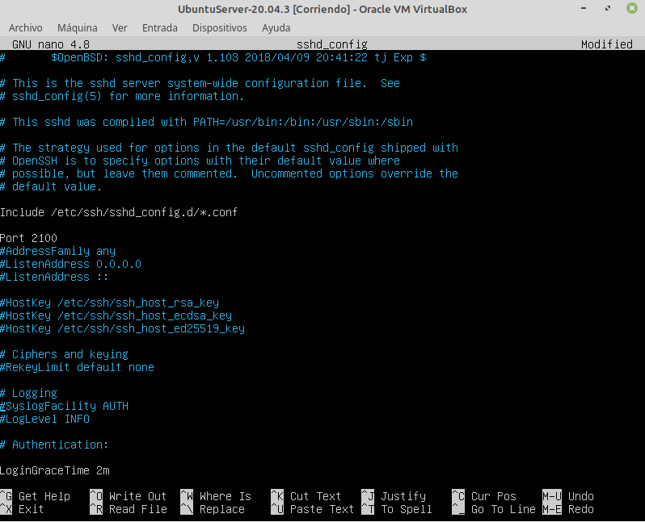

3.1.2 Instalación del servidor SSH
1. Introducción
SSH (Secure Shell) es un protocolo de red que utiliza técnicas criptográficas para proporcionar un canal de comunicación seguro sobre una red no segura en una arquitectura cliente-sevidor. El puerto TCP asignado al servicio SSH es el 22.
SSH se utiliza, principalmente, para acceder de forma segura a un servidor remoto. Además de este uso, también se utiliza muy a menudo para transferir datos entre cliente y servidor de forma segura, gestionar claves RSA que permitan el acceso al servidor sin introducir la contraseña y redirigir los datos de cualquier aplicación utilizando un túnel seguro.
Documentación Ubuntu
1. Escenario
Para este capítulo, se trabaja con los siguiente equipos:
- Ubuntu server 20.04.3 que hará las veces de servidor de ssh con ip 192.168.0.22.
- Equipo Linux Mint 19 que hará las veces de cliente con ip 192.168.0.19.
- Equipo Windows 10 que hará las veces de cliente con ip 192.168.0.30.
2. Instalación del servidor ssh
Para instalar el servidor ssh, en primer lugar se realiza la actualización de los repositorios y luego la instalación del paquete openssh-server.
administrador@orion:/$sudo apt update && sudo apt install openssh-server
Después de instalar el paquete openssh-server se recomienda realizar una copia de seguridad del fichero de configuración original y eliminar los permisos de escritura para todos los usuarios en la copia antes de editar la configuración para adaptarla a nuestras necesidades.
administrador@orion:/$sudo cp /etc/ssh/sshd_config sshd_config.factory-defaults
administrador@orion:/$sudo chmod a-w /etc/ssh/sshd_config.factory-defaults
A continuación, hay que editar el fichero sshd_config:
administrador@orion:/$sudo nano /etc/ssh/sshd_config
La mayoría de opciones se pueden dejar en su valor por defecto, pero algunos de los parámetros que puede resultar interesante modificar son los siguientes:
- Port 22. Por defecto, SSH se asocia al puerto TCP 22. En un sistema en producción puede resultar conveniente asociarlo con otro puerto (por encima del 1024, como puede ser el 2100).
- LoginGraceTime 120. La opción LoginGraceTime especifica el número de segundos en que la conexión se mantiene abierta sin que se haya producido un inicio de sesión satisfactorio. Este valor se debería ajustar un a poco más del tiempo que se utiliza en realizar un inicio de sesión normal.
- StrictModes yes. La opción StrictModes es una guarda de protección que rechazará cualquier intento de inicio de sesión si los ficheros de autenticación son legibles por todo el mundo (es decir, cuando los ficheros de configuración no son seguros).
- PermitRootLogin prohibit-password. La opción PermitRootLogin especifica si el usuario root puede iniciar sesión o no de forma remota. Por defecto, no se permite acceder con contraseña aunque sí mediante otros métodos como la criptografía asimétrica o de clave pública. Si se ha creado un usuario que puede elevar sus privilegios (por medio de su o de sudo), debería tener el valor no.
- PasswordAuthentication yes. La opción PasswordAuthentication especifica si se permite el acceso mediante contraseña en el sistema. Si se utiliza el acceso por criptografía de clave asimétrica (claves pública y privada), este valor debería ser no.
- PubkeyAuthentication yes. La opción PubkeyAuthentication especifica que si se utilizará el acceso por criptografía de clave asimétrica (claves pública y privada). Por defecto, los servidores OpenSSH tienen esta opción activada.
- X11Forwarding yes y X11DisplayOffset 10. Estos parámetros configuran la capacidad de redireccionamiento de entorno gráfico (X11 Forwarding), lo que permite ejecutar una aplicación gráfica en el sistema remoto y visualizarla en el sistema local. Además de estar configurada en el servidor, también se debe indicar en el cliente cuando se conecte.
- PrintMotd no. Esta opción indica si quiere mostrar la información del motd cuando se inicie la sesión.
- AllowUsers ..., DenyUsers ..., AllowGroups ..., DenyGroups .... En ocasiones puede interesarte gestionar qué usuarios o qué grupos pueden o no conectarse vía SSH al servidor. Hay que tener en cuenta estos aspectos:
- Por defecto, todos los usuarios y grupos tienen acceso vía SSH, así que para cambiar esta situación es necesario configurar el servidor SSH.
- Opción DenyUsers: indica el nombre de uno o más usuarios que no podrán conectarse.
- Opción AllowUsers: indica qué usuario o lista de usuarios serán los únicos que podrán conectarse.
- Opción DenyGroups: indica el nombre de uno o más grupos de usuarios que no podrán conectarse.
- Opción AllowGropus: indica qué grupo o grupos de usuarios serán los únicos que podrán conectarse.
Las páginas del man de este archivo dicen que, en caso de que configures más de una de estas opciones, el servidor SSH las procesará en este orden: DenyUsers, AllowUsers, DenyGroups y AllowGroups. Pero nuestras pruebas dicen que no es exactamente así, por ejemplo, si usas la opción DenyUsers, no funcionará AllowUsers. Lo mismo pasa con las directivas que afectan a los grupos.

Obra publicada con Licencia Creative Commons Reconocimiento No comercial Compartir igual 4.0